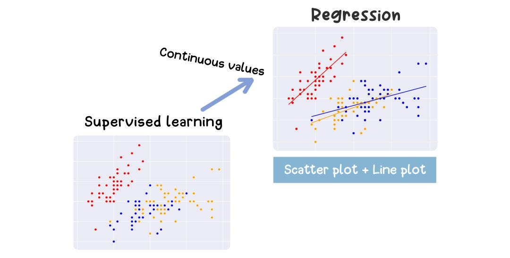
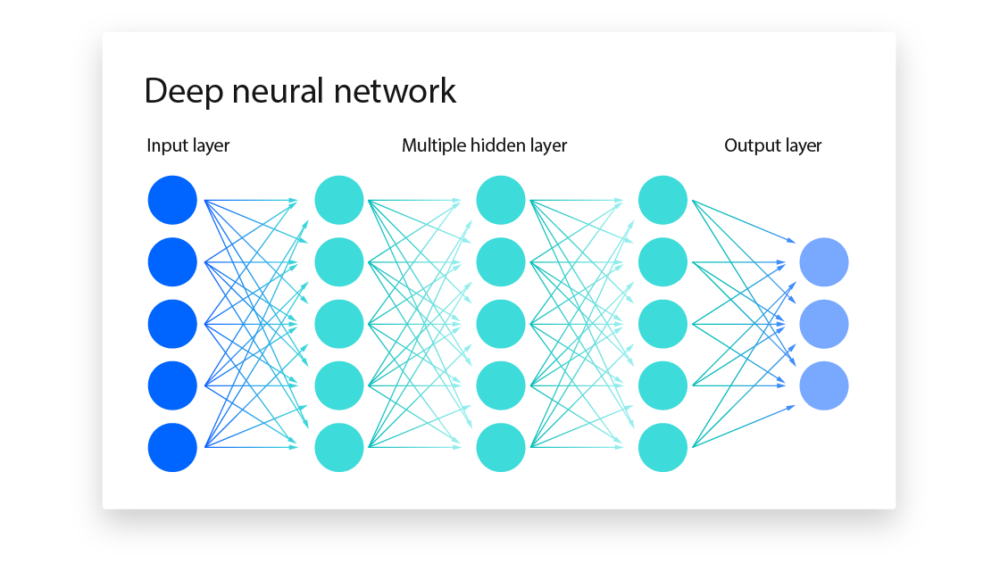
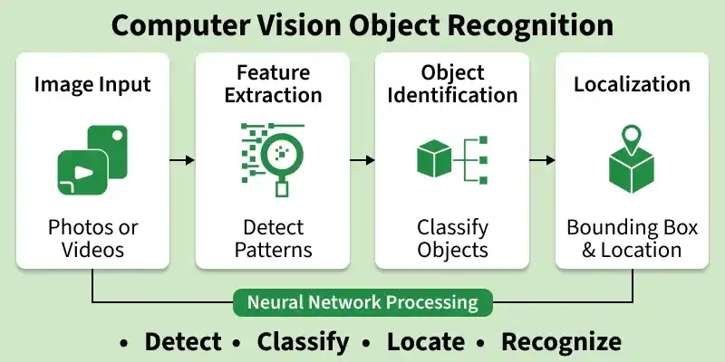

Machine Learning
Systems that learn patterns from data instead of following hand-written rules.
IBM: Machine Learning →Artificial intelligence (AI) is the branch of computer science focused on building systems that can perform tasks normally associated with human thinking, such as recognising images, understanding language, or making decisions.
AI is a broad umbrella term. The four cards below cover some of its most important subfields, each linked to a trusted resource for further reading.

Systems that learn patterns from data instead of following hand-written rules.
IBM: Machine Learning →
A type of machine learning using layered neural networks, powerful for complex tasks.
Deep Learning Book →
Teaching computers to interpret and understand images and video.
OpenCV documentation →Models that create new content, such as text, images, or code, from a prompt.
OpenAI Research →